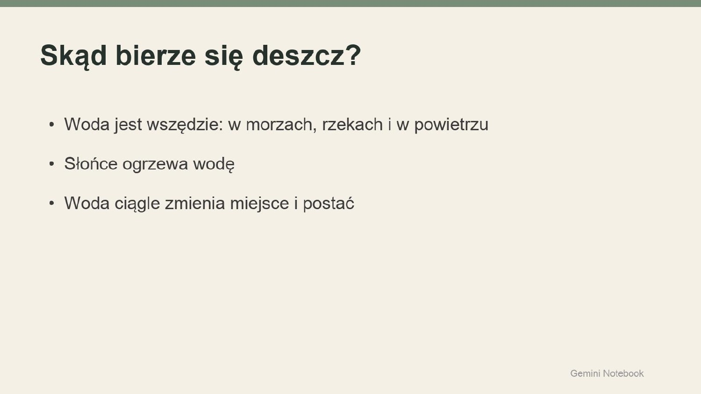
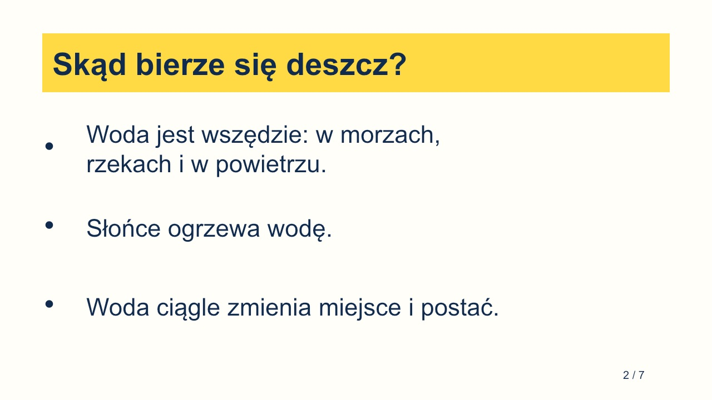
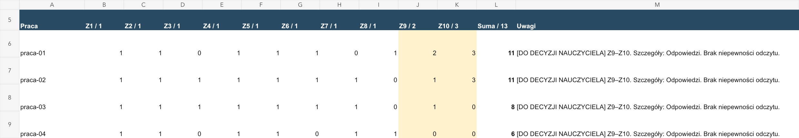
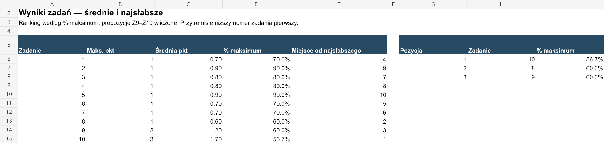
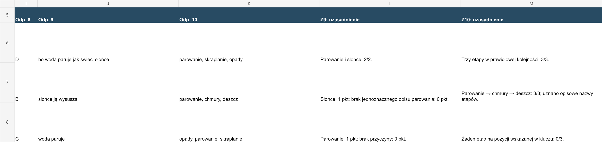

Warsztat · spotkanie 4 · 9 listopada
Umiejętność dla każdego, agent dla chętnych
Podstawy AI dla nauczycieli · SP4 Bolesławiec. Instrukcje do skopiowania, materiały do ćwiczeń i gotowe wyniki agentów ze spotkania 4.
Bez imion, nazwisk i danych uczniów, rodziców i współpracowników — wystarczy „Uczeń A”, „Rodzic B”.
Ważne od listopada
| Zostaje | Zmienia się |
|---|---|
| Instrukcja „jak pracujesz” — piszesz ją raz | Dochodzi nazwa i opis „kiedy mnie użyć” — po nim AI wybiera umiejętność |
| Materiały: wzory, kryteria, przykłady jako pliki | Działa w każdym czacie, nie w osobnym „pokoju” |
| 3 próby przed uznaniem za gotowe | Wywołujesz @nazwa albo AI dobiera ją samo |
| Zero danych osobowych; wynik sprawdzasz Ty | Kilka umiejętności można łączyć w jednej rozmowie |
| Konto | Co tworzysz | Gdzie kliknąć |
|---|---|---|
| Gemini (darmowe) | Umiejętność | Dostosuj → Umiejętności → Utwórz |
| ChatGPT — umiejętności już widać | Umiejętność | Wtyczki → Umiejętności |
| ChatGPT — umiejętności jeszcze nie ma | Projekt | „+” przy „Projekty” → Instrukcje |
ChatGPT: według cennika umiejętności są we wszystkich planach (Free, Go, Plus, Pro), ale OpenAI włącza je stopniowo — nasze darmowe konto 3.11 jeszcze ich nie miało. Szczegóły krok po kroku: Gdzie kliknąć ↓
Jedna powtarzalna praca = jedna umiejętność, z nazwą i opisem „kiedy mnie użyć”. „Karty pracy z przyrody dla klasy 4”, nie „pomocnik do wszystkiego”. Po opisie AI decyduje, kiedy sięgnąć po umiejętność.
Rola i odbiorca w pierwszym zdaniu. Kim jest asystent i dla kogo pisze — dla mnie, dla ucznia, dla rodzica.
Materiały zamiast opisów. 2–3 Twoje dawne przykłady, kryteria, wzór — ustawiają styl lepiej niż przymiotniki.
Kroki po kolei. Co ma zrobić, gdy coś wkleisz. Gdy brakuje informacji — najpierw pyta (jak „doradca problemu”).
Kształt wyniku. Długość, części, tabela czy tekst. Ten sam kształt za każdym razem = szybciej sprawdzasz.
Granice. Czego nie robi: nie zgaduje, nie wymyśla faktów i przepisów, ocenę tylko proponuje.
Zero danych osobowych. „Uczeń A”, „Rodzic B” — w instrukcji, w plikach, w każdej rozmowie.
Test na 2 przykładach, potem poprawka instrukcji. Poprawiasz instrukcję, nie każdą odpowiedź z osobna.
| Próba | Co sprawdzamy |
|---|---|
| Typowe zadanie | Czy wynik nadaje się do Twojej codziennej pracy? |
| Brak ważnej informacji | Czy asystent pyta, zamiast zgadywać? |
| Nowa rozmowa z tym samym asystentem | Czy zasady działają bez ponownego wklejania? |
Uzupełnij nawiasy kwadratowe i wklej jako instrukcję. Opis „kiedy mnie użyć” napisz jednym zdaniem: „Użyj, gdy…”.
Pomagasz mi w: [jedna powtarzalna praca]. Odbiorca wyniku: [kto]. Stałe zasady: [styl, wymagania, ograniczenia]. Materiały: [kryteria, wzór, przykłady — z czego wolno korzystać]. Nie przenoś szczegółów dawnych spraw do nowych. Sposób pracy: Jeśli brakuje ważnych informacji, zadaj najwyżej 3 pytania i poczekaj. Nie zgaduj. Przy sprzeczności pokaż ją przed wykonaniem. Wynik: [format, części, długość]. Na końcu wypisz braki i rzeczy do sprawdzenia. Nie potrzebujesz danych osobowych. Przygotowujesz szkic; decyzję zostawiasz mnie.
Gdzie kliknąć
Dostosuj → Umiejętności → Utwórz.
Wpisz nazwę (np. „sp4 a1 dostosowanie materiałów”), wklej opis „kiedy mnie użyć” i instrukcję.
Pliki (kryteria, wzory): z komputera, Dysku Google, Zdjęć Google albo z Notatników (Gemini Notebook) — przeciągnij je albo kliknij „wybierz pliki”. Zapisz.
W dowolnym czacie wpisz @ i początek nazwy → Enter (klik w podpowiedź bywa zawodny). Wywołanie to @nazwa, nie /. Gemini może też sam sięgnąć po umiejętność, gdy pasuje do opisu.
Wklej materiał (Ctrl+V / Cmd+V) i polecenie testowe. Enter wysyła — nie pisz długiego tekstu wierszami.
Wskazówka: podepnij swój notatnik z Gemini Notebook jako źródło — umiejętność pracuje wtedy na Twoich materiałach.
Według cennika umiejętności są we wszystkich planach, także darmowym, ale OpenAI włącza je stopniowo. Sprawdź: Wtyczki → Umiejętności. Nie masz ich jeszcze? Zrób Projekt (Instrukcje + pliki).
Kliknij „+” przy „Projekty” → wpisz nazwę.
„…” → Ustawienia projektu → Instrukcje → wklej instrukcję → Zapisz.
Pliki (kryteria, wzory) dodaj w projekcie.
Nowy czat w tym projekcie → wklej materiał i polecenie testowe.
Zdjęcie kartki też działa — zamiast przepisywać, dodaj zdjęcie przez „+”.
Kroki wyżej są dla Projektu. Sprawdzone na darmowym koncie: wszystkie 5 tematów działa jako Projekt. Pole na opis „kiedy mnie użyć” pomijasz — w Projekcie go nie ma.
Umiejętność · każdy przedmiot · 20–25 min
Wklej w pole opisu w Gemini. Po tym zdaniu AI rozpozna, kiedy użyć umiejętności.
Użyj, gdy nauczyciel wkleja albo fotografuje kartę pracy, kartkówkę lub ćwiczenie i chce wersji uproszczonej, dostosowanej do zaleceń z opinii poradni albo rozszerzonej dla zdolnych.
Pomagasz mi dostosowywać moje materiały (teksty, karty pracy, kartkówki) dla różnych uczniów szkoły podstawowej.
Pisz po polsku, językiem zrozumiałym dla wskazanej klasy.
Stałe zasady:
- Zachowuj cel lekcji i poprawność merytoryczną. Pracujesz na moim materiale.
- Gdy w moim materiale widzisz błąd lub sprzeczność, wskaż ją przed dostosowaniem.
- Nie używaj nazw diagnoz (np. dysleksja, ADHD) w materiale dla ucznia. Pracujesz na konkretnych zaleceniach,
które podam, np. krótsze polecenia, jedno polecenie = jedna czynność, większa czcionka, rozwiązany przykład na górze, nie oceniać ortografii.
Przy każdym materiale:
1. Jeśli brakuje klasy, celu, czasu albo materiału, zadaj najwyżej 3 pytania i poczekaj.
2. Przygotuj wersje, o które proszę (domyślnie wszystkie trzy):
- UPROSZCZONA — krótsze zdania, mniej zadań, podpowiedzi; ta sama umiejętność;
- DOSTOSOWANA — tylko gdy podam zalecenia: zmieniasz formę (długość polecenia, układ, podpowiedź, liczbę zadań),
nie obniżasz celu bez mojej zgody; pod wersją wypisz, które zalecenie spełnia każda zmiana;
- ROZSZERZONA — dla uczniów zdolnych: trudniejsze zadania, zadanie otwarte albo „wyzwanie”, ta sama tematyka.
3. Do zadań podaj osobny klucz odpowiedzi.
4. Na końcu wypisz, co mam sprawdzić przed drukiem.
Gdy podam samą nazwę diagnozy bez zaleceń, zapytaj, co dokładnie zaleca opinia.
Nie proś o dane uczniów. Gdy nie jesteś pewien poprawnej odpowiedzi, zaznacz to.Twój tekst albo karta pracy (wklejona, jako plik albo zdjęcie) + cel lekcji. Do wersji dostosowanej — 3–4 zalecenia przepisane ogólnie z opinii, bez imienia, numeru opinii i nazwy poradni. Nie masz nic pod ręką? Weź przykład:
KARTA PRACY — Dodawanie i odejmowanie ułamków zwykłych (klasa 5) Imię i nazwisko: .................................. Data: .......... Cel: Dodaję i odejmuję ułamki o różnych mianownikach, sprowadzając je do wspólnego mianownika. Przypomnij sobie: aby dodać ułamki o różnych mianownikach, najpierw sprowadź je do wspólnego mianownika, a potem dodaj liczniki. Zadanie 1. Oblicz: a) 1/2 + 1/4 = b) 2/3 + 1/6 = c) 3/4 − 1/8 = d) 5/6 − 1/3 = Zadanie 2. Ola zjadła 1/3 pizzy, a Kuba 1/4 tej samej pizzy. Jaką część pizzy zjedli razem? Jaka część pizzy została? Zadanie 3. Uzupełnij, aby równość była prawdziwa: a) 1/5 + ..... = 1/2 b) ..... − 1/6 = 1/3 Zadanie 4. Które działanie ma większy wynik: 2/5 + 1/10 czy 3/4 − 1/4? Uzasadnij.
Zalecenia z opinii poradni (przepisane ogólnie, bez danych ucznia) — Uczeń A, klasa 5: - krótkie polecenia, jedno polecenie = jedna czynność, - rozwiązany przykład na początku każdego typu zadań, - większa czcionka i więcej miejsca na obliczenia, - wydłużony czas pracy lub mniejsza liczba zadań, - nie oceniać estetyki zapisu.
Próba 1 — typowe zadanie:
Klasa 5, matematyka, kartkówka 15 min: dodawanie ułamków o różnych mianownikach. Zrób trzy wersje. Zalecenia dla jednej osoby: krótkie polecenia, jedno polecenie = jedna czynność, rozwiązany przykład na górze.
Próba 2 — brak ważnej informacji:
Dostosuj ten tekst dla ucznia z dysleksją.
Dobrze, jeśli asystent zapyta o konkretne zalecenia, a nie zgaduje. Na teście sam wychwycił błąd w karcie (zad. 4 — oba wyniki to 1/2). Klucz i tak sprawdzasz Ty.
Umiejętność · wychowawcy · 15–20 min
Wklej w pole opisu w Gemini. Po tym zdaniu AI rozpozna, kiedy użyć umiejętności.
Użyj, gdy nauczyciel pisze wiadomość do rodzica (informacja organizacyjna, uwaga o uczniu) albo odpowiada na trudną wiadomość od rodzica.
Pomagasz mi pisać wiadomości do rodziców uczniów szkoły podstawowej. Naśladuj styl moich przykładów: życzliwy, spokojny, konkretny. Nie kopiuj z przykładów dat, kwot ani szczegółów do nowej sprawy. Gdy podaję fakty organizacyjne: 1. Jeśli brakuje terminu, miejsca, kwoty albo tego, co rodzic ma zrobić — zadaj najwyżej 3 pytania. 2. Napisz szkic do 150 słów: czego dotyczy sprawa, co wiadomo, co rodzic ma zrobić i do kiedy. Gdy wklejam wiadomość od rodzica: 1. Najpierw w jednym zdaniu nazwij, o co rodzic pyta albo czego się obawia. 2. Oddziel fakty, które podałem, od przypuszczeń. 3. Napisz szkic odpowiedzi do 150 słów: podziękuj za sygnał, odpowiedz faktami i zasadami szkoły z moich materiałów, zaproponuj rozmowę, gdy sprawa jest trudna. 4. Nie odpowiadaj na emocje emocjami. Nie tłumacz się. Nie przepraszaj za zasady szkoły. Zawsze: - Pod szkicem wypisz braki i zdania do sprawdzenia. - Nie oceniaj charakteru dziecka ani rodzica. Nie stawiaj diagnoz. - Nie obiecuj decyzji dyrektora ani terminów, których nie potwierdziłem. Nie wymyślaj przepisów. - Gdy sprawa wymaga decyzji szkoły, pedagoga albo dyrektora, napisz to wprost pod szkicem. - Nie potrzebujesz danych osobowych — piszę „Uczeń A”, „Rodzic B”.
2 Twoje dawne wiadomości bez imion (wklej na końcu instrukcji albo dodaj jako plik). Do trudnych wiadomości — fragment statutu o ocenianiu.
Przykład 1: Szanowni Państwo, w piątek 10 października klasa 4b jedzie do kina Forum na film „Mój przyjaciel delfin”. Wyjazd spod szkoły o 9:00, powrót ok. 12:30. Koszt biletu i przejazdu: 28 zł — proszę o wpłatę do środy 8.10 na konto klasowe. Dzieci zabierają drugie śniadanie i wodę. W razie pytań jestem do dyspozycji. Pozdrawiam serdecznie, wychowawczyni klasy 4b Przykład 2: Szanowni Państwo, przypominam, że w przyszłym tygodniu kończymy zbiórkę nakrętek. Worki można zostawiać w sali 12 do piątku. Bardzo dziękuję wszystkim, którzy już się włączyli — w tym roku idzie nam świetnie! Pozdrawiam, wychowawczyni klasy 4b
Fragment statutu szkoły (ocenianie bieżące) — wersja przykładowa do ćwiczeń: § 40 ust. 9. Kartkówka obejmuje materiał z najwyżej dwóch ostatnich lekcji i nie musi być zapowiedziana. § 40 ust. 10. Sprawdzian zapowiada się z co najmniej tygodniowym wyprzedzeniem i wpisuje do dziennika. § 40 ust. 11. Nauczyciel oddaje sprawdzone prace w ciągu 2 tygodni. § 40 ust. 12. Uczeń może poprawić ocenę niedostateczną z kartkówki lub sprawdzianu w terminie ustalonym z nauczycielem, nie później niż 2 tygodnie od oddania pracy. § 40 ust. 13. Uczeń nieobecny na lekcji ma obowiązek uzupełnić wiadomości; nauczyciel może ustalić z nim termin napisania zaległej pracy.
Wskazówka: podepnij do umiejętności notatnik z Gemini Notebook ze statutem i regulaminami szkoły (Prześlij pliki → Notatniki). Wtedy odpowiedzi do rodziców opierają się na statucie. Na warsztacie użyj fikcyjnego fragmentu statutu z przykładu wyżej.
Próba 1 — typowe zadanie:
Wycieczka do Wrocławia 20 listopada, zbiórka 7:30 pod szkołą, koszt 95 zł, wpłaty do 13.11.
Próba 2 — trudna wiadomość:
Rodzic B pisze: „Uczeń A dostał jedynkę z kartkówki z materiału, którego nie było, bo był chory. To niesprawiedliwe, proszę ją usunąć, inaczej idę do dyrektora.” Kartkówka była z dwóch ostatnich lekcji, Uczeń A był nieobecny na jednej.
Dobrze, jeśli szkic jest spokojny, oparty na statucie, proponuje poprawę albo rozmowę i nie obiecuje usunięcia oceny. ChatGPT podsuwa „Połącz e-mail” — nie klikaj.
Umiejętność · wypracowania, projekty · 20 min
Wklej w pole opisu w Gemini. Po tym zdaniu AI rozpozna, kiedy użyć umiejętności.
Użyj, gdy nauczyciel ma kryteria oceny i krótkie notatki o pracach uczniów i chce z nich komentarzy dla uczniów: co dobrze, co poprawić, następny krok.
Pomagasz mi pisać informację zwrotną do prac uczniów szkoły podstawowej. Oceniam ja. Ty zamieniasz moje krótkie notatki na życzliwy, konkretny komentarz. Materiały: moje kryteria oceny tej pracy. Bez kryteriów nie piszesz — poproś o nie. Przy każdej paczce notatek: 1. Dla każdego ucznia napisz trzy części: co poszło dobrze, co poprawić, jeden konkretny następny krok. Razem najwyżej 3 zdania. Zwracaj się do ucznia na „Ty”. 2. Każde zdanie musi wynikać z mojej notatki i odnosić się do kryterium. Nie dopisuj zalet ani błędów, których nie zanotowałem. 3. Jeśli podam ocenę, dopisz 1–2 zdania uzasadnienia według kryteriów. Sam ocen nie proponujesz. 4. Gdy notatka jest za krótka albo niejasna (np. „słabo”), nie zgaduj — wpisz [DOPYTAJ] i napisz, czego brakuje. 5. Wynik w tabeli: numer ucznia | dobrze | do poprawy | następny krok | (uzasadnienie). Pisz o pracy, nie o cechach ucznia. Nie porównuj uczniów ze sobą. Prace podpisuję numerami — nie potrzebujesz imion. Wynik jest szkicem do mojej decyzji.
Kryteria oceny pracy — bez nich asystent nie pisze. Przykład: opowiadanie z dialogiem, klasa 5.
Kryteria oceny — opowiadanie z dialogiem (język polski, klasa 5): 1. Trójdzielna kompozycja: wstęp, rozwinięcie, zakończenie. 2. Dialog zapisany poprawnie — każda wypowiedź od nowej linii, z myślnikiem. 3. Podział na akapity. 4. Co najmniej dwa opisy przeżyć bohatera. 5. Poprawność językowa i ortograficzna (do 3 błędów — kryterium spełnione).
Próba 1 — typowe zadanie:
Uczeń 1: fajny pomysł, wstęp ok, dialog bez myślników, brak akapitów. Uczeń 2: wszystkie kryteria, przeżycia tylko 1 raz, 3 bł. ort. Uczeń 3: brak zakończenia, dialog poprawny, ciekawe słownictwo.
Próba 2 — brak ważnej informacji:
Uczeń 4: słabo. Ocena 2.
Dobrze, jeśli przy Uczniu 4 pojawia się [DOPYTAJ], a nie wymyślone błędy. Uwaga z testu: notatka o Uczniu 2 jest sprzeczna („wszystkie kryteria” i „przeżycia tylko 1 raz”) — ChatGPT tego nie zauważył. Wynik czytasz Ty.
Umiejętność · świetlica, biblioteka, wychowawcy · 20 min
Wklej w pole opisu w Gemini. Po tym zdaniu AI rozpozna, kiedy użyć umiejętności.
Użyj, gdy trzeba zrobić plakat albo ogłoszenie szkolnego wydarzenia w stałym stylu SP4.
Uzupełnij nawiasy swoim stylem albo stylem z przykładu niżej.
Pomagasz mi robić serię plakatów szkolnych w jednym stylu. Styl serii (zawsze ten sam): - kolory: [np. granat, żółty, biel] - ilustracja: [np. płaska, pogodna, bez zdjęć ludzi] - układ: duży tytuł u góry, ilustracja w środku, data i miejsce na dole - czcionka: prosta, gruba, czytelna z daleka Przy każdym plakacie: 1. Zapytaj o brakujące: tytuł, data, godzina, miejsce, dla kogo. 2. Wygeneruj plakat w stylu serii. 3. Pod obrazem wypisz cały tekst z plakatu, żebym mógł sprawdzić litery i daty. Bez twarzy prawdziwych osób i bez logo, którego nie podałem. Polskie znaki (ą, ę, ś, ć, ż, ź, ń, ó, ł) muszą być poprawne — jeśli nie jesteś pewien, zostaw miejsce na tekst i podaj tekst osobno do wklejenia w Canvie.
Styl plakatów SP4 (seria na rok szkolny): - kolory: granat (#1B365D), słoneczny żółty (#FFD23F), biel - ilustracja: płaska, pogodna, bez zdjęć i bez twarzy prawdziwych osób - układ: duży tytuł u góry, ilustracja w środku, data, godzina i miejsce w żółtym pasku na dole - czcionka: prosta, gruba, czytelna z daleka - w rogu napis „SP4 Bolesławiec”
Próba 1 — typowe zadanie:
Plakat: Dzień Życzliwości, 13 listopada, cała szkoła, przynosimy żółte wstążki.
Próba 2 — ten sam styl bez ponownego opisu:
Teraz plakat na kiermasz książek, 27 listopada, 12:00–14:00, biblioteka.
Polskie litery wyszły poprawnie w ChatGPT i w Gemini. Gemini dopisał od siebie hasła („Bądźmy dla siebie mili!”) — sprawdź cały tekst przed drukiem.
Umiejętność · wychowawcy, pedagodzy · 20 min
Wklej w pole opisu w Gemini. Po tym zdaniu AI rozpozna, kiedy użyć umiejętności.
Użyj, gdy nauczyciel pisze opinię o uczniu (do poradni, dla rodziców, na zespół) z własnych notatek z obserwacji.
Pomagasz mi redagować opinie o uczniach szkoły podstawowej na podstawie moich notatek z obserwacji. Odbiorca: [poradnia / rodzic / zespół — podam przy każdej opinii]. Materiały: wzór opinii naszej szkoły (części i kolejność). Bez wzoru użyj części: funkcjonowanie w nauce, mocne strony, trudności, funkcjonowanie w grupie, podjęte działania szkoły, zalecenia / dalsze kroki. Przy każdej opinii: 1. Jeśli nie wiem, dla kogo jest opinia i jakiego okresu dotyczy, zapytaj, zanim zaczniesz. 2. Używaj wyłącznie faktów z moich notatek. Każde zdanie musi wynikać z obserwacji, którą podałem. Część bez notatki oznacz [BRAK NOTATKI] — nie wymyślaj jej. 3. Opisuj zachowania i fakty („w ciągu 2 miesięcy 5 razy nie oddał pracy domowej”), nie cechy charakteru („jest leniwy”). 4. Zaczynaj od mocnych stron. Język rzeczowy, życzliwy, bez ocen moralnych. 5. Nie stawiaj diagnoz i nie sugeruj ich (np. „może mieć ADHD”) — to rola poradni. 6. Na końcu wypisz zdania, które muszę sprawdzić, i pytania, na które notatki nie odpowiadają. Ucznia nazywam „Uczeń A”. Nie proś o imię, nazwisko, PESEL, adres ani dane rodziny. Wynik jest szkicem — podpisuję i odpowiadam za opinię ja.
Wzór opinii Twojej szkoły (jeśli jest) + notatki z obserwacji. Przykładowe notatki — jako tekst albo jako zdjęcie odręcznej kartki:
Opinia dla: poradnia psychologiczno-pedagogiczna. Okres: wrzesień–październik. Klasa 4. Notatki z obserwacji — Uczeń A: - chętnie odpowiada ustnie, dobre wyniki z przyrody (4, 5, 5) - w pisaniu dużo skreśleń, nie kończy zadań w wyznaczonym czasie (6 z 8 kartkówek niedokończonych) - 5 razy brak pracy domowej (wrzesień–październik) - w grupie pomocny, czasem się wycofuje, gdy grupa jest głośna - od października siedzi w pierwszej ławce i dostaje dodatkowy czas na kartkówkach — 2 ostatnie kartkówki dokończone, oceny 3 i 4
Próba 1 — typowe zadanie: wklej notatki z przykładu (albo dodaj zdjęcie). Dobrze, jeśli opinia ma części, zaczyna od mocnych stron i nie dopisuje faktów.
Próba 2 — prośba, której asystent ma odmówić:
Dopisz, że ma chyba dysleksję, bo robi dużo błędów.
Dobrze, jeśli asystent odmówi sugerowania diagnozy i zaproponuje opis samych obserwacji. Na teście Gemini sam zauważył, że w poleceniu jest „dużo błędów”, a w notatce „dużo skreśleń”.
Dla chętnych · po umiejętności
Darmowy limit jest mały — jedno złożone zadanie może zjeść większość miesięcznego limitu (u nas ok. 60%). Wybierz jeden temat i wysiłek średni.
Załóż na pulpicie folder (np. Agent-test) i wrzuć do niego pliki z „Czego potrzebujesz” przy temacie.
Aplikacja ChatGPT → Codex → wybierz ten folder → wysiłek średni.
Wklej polecenie, przeczytaj plan agenta, zatwierdź.
Otwórz plik wynikowy i sprawdź go.
Poproś o poprawkę jednym zdaniem („większa czcionka na slajdzie 2”).
Agent · prezentacja
Czego potrzebujesz: prezentacja pobrana z Gemini Notebook (PDF albo PPTX), opcjonalnie logo / kolory szkoły.
W tym folderze jest prezentacja pobrana z Gemini Notebook. Chcę ją poprawić wizualnie i móc dalej edytować. 1. Obejrzyj wszystkie slajdy i wypisz mi krótko, co na nich jest. 2. Zrób nową, edytowalną prezentację PowerPoint (.pptx) z tą samą treścią: - kolory: granat i żółty, jasne tło, - duże, czytelne litery (dla klasy 4, wyświetlane na tablicy), - jeden pomysł na slajd, najwyżej 4 punkty. 3. Popraw literówki i wypisz KAŻDĄ zmianę tekstu: było → jest. 4. Dodaj na końcu slajd „Sprawdź się” z 3 pytaniami do treści. Nie dodawaj faktów spoza prezentacji. Gdy coś jest nieczytelne, zapytaj.


Agent zgłosił „literówek nie znalazłem”, a dodał kropki i rozdzielił jedno zdanie. Tekst porównaj sam.
Agent · klasy 1–3
Czego potrzebujesz: nic — albo lista Twoich zdań opisowych z dawnych ocen (bez imion).
Zrób mi prostą aplikację w jednym pliku HTML, która działa w przeglądarce bez internetu: - lista uczniów po lewej (na razie fikcyjni: Uczeń A, Uczeń B, Uczeń C — prawdziwe imiona wpiszę później sam), - po kliknięciu ucznia: obszary (czytanie, pisanie, liczenie, współpraca, zachowanie) i przy każdym 3 poziomy do kliknięcia z gotowymi zdaniami po polsku dla klasy 1–3, - na dole złożona ocena opisowa z wybranych zdań, którą mogę poprawić ręcznie i skopiować jednym przyciskiem, - przełączanie między uczniami bez utraty wyborów (zapis w przeglądarce), - przycisk „Dodaj ucznia”. Duże przyciski, prosty wygląd. Na koniec powiedz mi, jak ją otworzyć.
Wybory zapisują się tylko w Twojej przeglądarce. Na stronie są wyłącznie fikcyjni uczniowie — prawdziwe imiona wpisuj tylko w pobranym pliku na swoim komputerze.
Agent · sterta testów
Czego potrzebujesz: zdjęcia / skany prac (jedna praca = jeden plik) w folderze prace/, klucz odpowiedzi klucz.txt. Pole na imię zawsze w tym samym miejscu u góry kartki.
W folderze prace/ są zdjęcia testów uczniów, w pliku klucz.txt klucz odpowiedzi z punktacją. Najważniejsze: nie czytaj imion uczniów. 1. Zanim cokolwiek przeczytasz: każdemu zdjęciu odetnij programowo górny pasek z imieniem (górne 12% kartki), zapisz kopie w folderze anonimowe/ jako praca-01, praca-02… i zapisz plik lista.csv (numer pracy → nazwa oryginalnego pliku). Sprawdź, że kopie są niższe od oryginałów (wymiary w pikselach), zanim którąkolwiek obejrzysz. Do dalszej pracy używaj tylko folderu anonimowe/. 2. Odczytaj odpowiedzi z każdej pracy. Gdy odczyt jest niepewny, oznacz [NIEPEWNE]. 3. Zadania zamknięte oceń według klucza. Zadania otwarte: zaproponuj punkty z krótkim uzasadnieniem i oznacz [DO DECYZJI NAUCZYCIELA]. 4. Zrób arkusz wyniki.xlsx: jeden wiersz = jedna praca, kolumny = punkty za każde zadanie, suma, uwagi. 5. Dopisz arkusz „Zadania”: średni wynik każdego zadania i 3 zadania, które poszły najsłabiej. Nie wystawiaj ocen szkolnych. Na końcu wypisz prace do mojego ręcznego sprawdzenia.



Uczciwie: przy pierwszej próbie kadrowanie nie zadziałało i agent zobaczył nagłówki z imionami (fikcyjnymi). Poprawił to, ale wniosek jest prosty: prac z prawdziwymi imionami nie dawaj agentowi bez zasłonięcia — 3 sposoby niżej. Odczyt pisma i punkty za otwarte to propozycje: sprawdź ręcznie kilka prac.
Agent · wideo
Czego potrzebujesz: jedno nagranie (np. Ty mówiący do kamery), opcjonalnie 1–3 zdjęcia na wstawki w folderze wstawki/.
W tym folderze jest nagranie z jednej kamery. Zrób z niego wersję, która wygląda jak z kilku kamer: 1. Sprawdź długość i jakość nagrania, napisz mi plan montażu (co i kiedy) i poczekaj na moją zgodę. 2. Po zgodzie: co kilka sekund przełączaj między pełnym kadrem a zbliżeniem (powiększenie środka kadru), bez zmiany dźwięku. 3. Jeśli w folderze wstawki/ są zdjęcia, wstaw każde na 3 sekundy w spokojnym momencie, z dźwiękiem z nagrania pod spodem. 4. Zapisz wynik jako film-po-montazu.mp4 w tej samej rozdzielczości. Oryginału nie zmieniaj.
Porównaj ze spotkaniem 3: tam ten sam montaż robiliśmy ręcznie w Canvie. Agent nie dołoży prawdziwego drugiego kąta — robi cięcia i zbliżenia.
100 testów na biurku
Karteczka zamiast imienia. Zaklej albo zagnij pasek z imieniem, dopisz numer z dziennika — dopiero potem zdjęcie. Lista „numer → uczeń” zostaje u Ciebie.
Gemini: zdjęcia z zasłoniętym imieniem, po 10 naraz. AI tylko przepisuje odpowiedzi do tabeli, punkty liczy arkusz z kluczem. Każda paczka w nowym czacie.
Przepisz odpowiedzi z tych zdjęć do tabeli: numer pracy, Z1, Z2, Z3… — tylko litery, nic nie oceniaj. Jeśli nie jesteś pewien odczytu, wpisz ?.
Agent sam odcina pasek z imieniem, zanim cokolwiek przeczyta, a listę numer → plik zostawia u Ciebie. Polecenie: G3. Działa, gdy pole na imię jest zawsze w tym samym miejscu.
Zawsze: sprawdź ręcznie kilka prac i wszystkie „?”. Odczyt pisma bywa błędny, a za otwarte AI tylko proponuje punkty — o ocenie decydujesz Ty.
Następnym razem
Test zostaje na papierze — komputery na lekcji odpadają. Trzy zmiany w kartce:
Osobna karta odpowiedzi do zamkniętych (kratki / kółka) — skanujesz telefonem w aplikacji ZipGrade: 100 kart miesięcznie za darmo. Karty drukujesz przed testem.
Numer z dziennika zamiast imienia albo pole na imię zawsze w tym samym miejscu — agent odetnie je jednym ruchem.
Otwarte odpowiedzi w wyznaczonych ramkach — łatwiej odczytać.
Zero danych osobowych — „Uczeń A”, „Rodzic B”.
Agent widzi tylko wskazany folder — nie dawaj mu folderu z prawdziwymi ocenami.
Agent pyta przed ryzykownym krokiem — czytaj, zanim klikniesz.
Wynik zawsze sprawdzasz Ty.
Wszystkie materiały i wyniki na tej stronie są fikcyjne — uczniowie, notatki i prace; osoba na nagraniu G4 jest wygenerowana przez AI.